Assinatura consistente
Logotipo, cor e elementos gráficos formam uma base que pode se adaptar a fundos, formatos e campanhas.
Arquivo de design / em expansão
Seleção de design · 2025—atual
Identidade e comunicação visual para o food trailer — da assinatura que chega na embalagem ao conteúdo que convida para o próximo pedido.
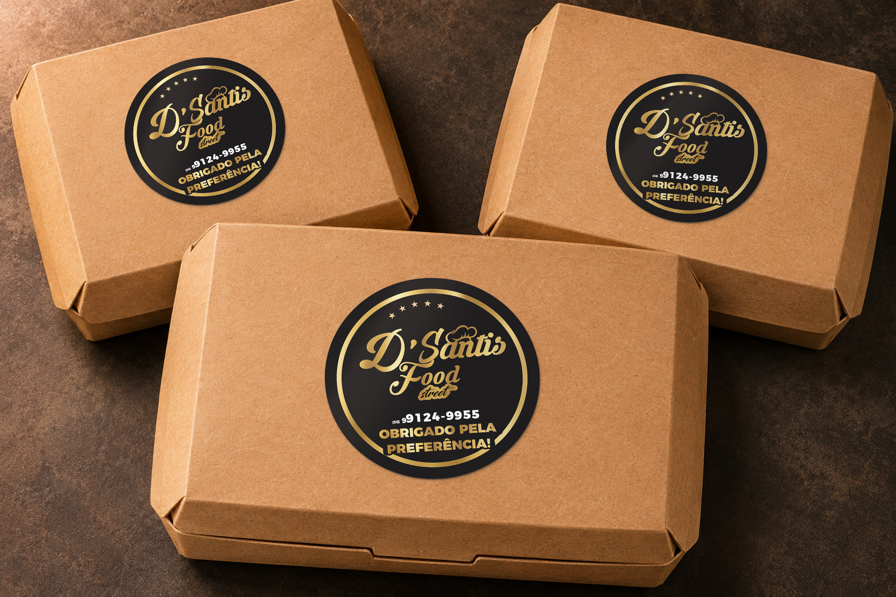
01 / CONTEXTO
O acervo mostra uma linguagem que se repete sem ficar igual: preto, dourado, padrões gráficos e tipografia de impacto conectam a marca aos materiais impressos, ao cardápio e à rotina das redes sociais.
02 / GALERIA
Cada capítulo mostra onde a identidade atua: da marca que assina os materiais à comunicação que responde ao movimento do dia.
01 / IDENTIDADE
Versões de marca e peças comemorativas que preservam o reconhecimento da D’Santis em diferentes fundos e formatos.

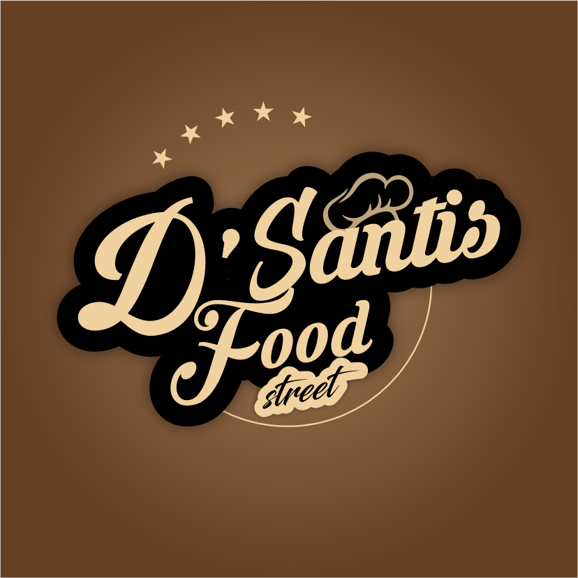
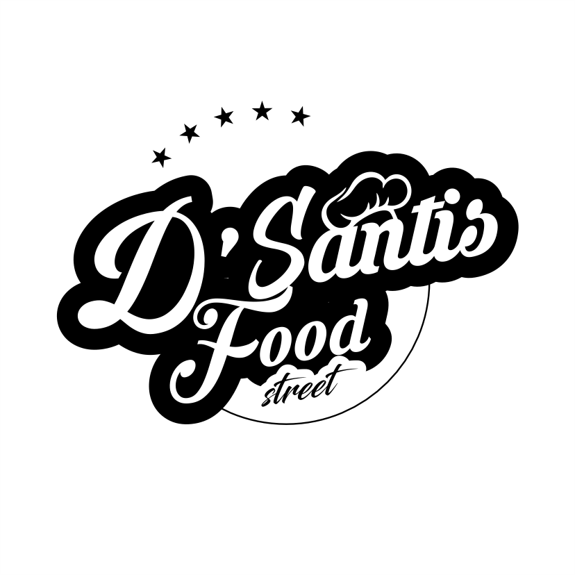
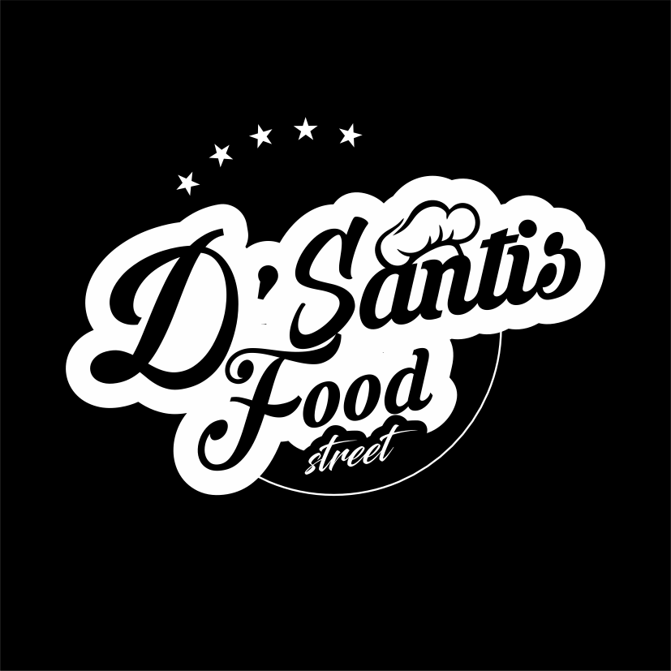

02 / PONTO DE VENDA
Adesivos, fichas e cartão de visita levam a identidade para os momentos em que o pedido é feito, entregue e lembrado.
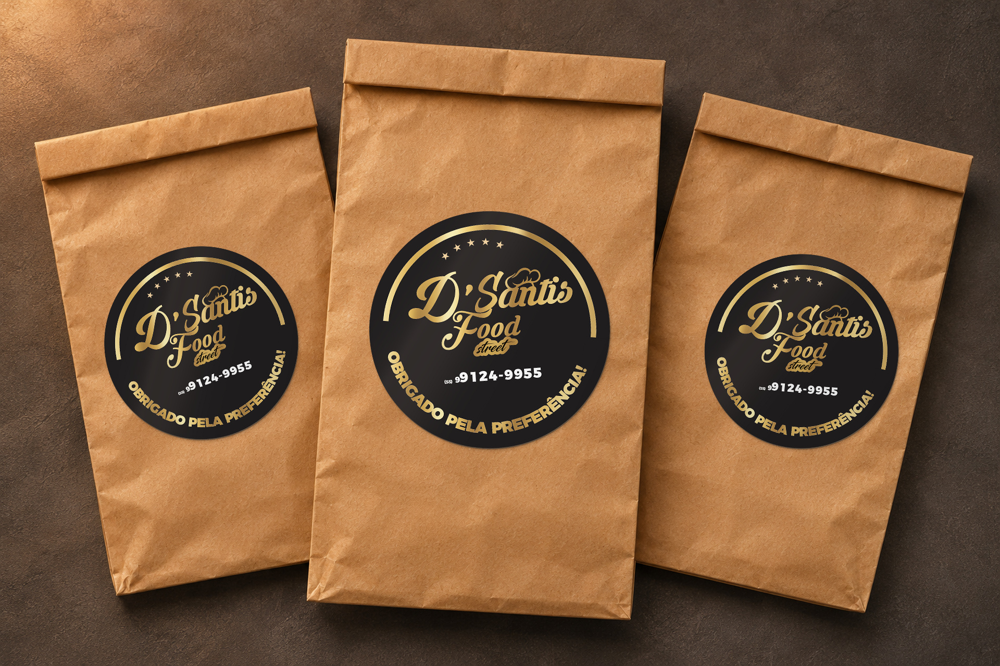
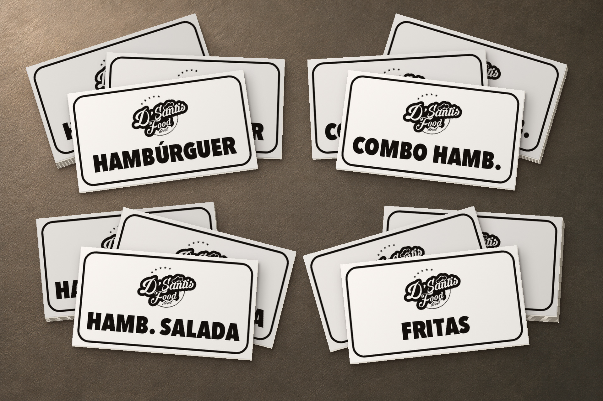
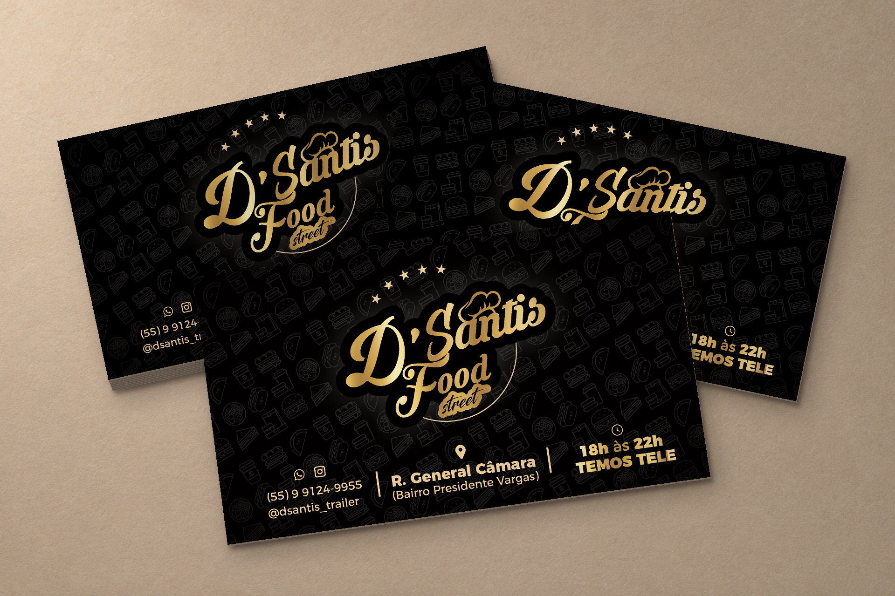
03 / CARDÁPIOS
Formatos de cardápio para apresentar categorias, combinações e preços dentro da mesma linguagem visual da marca.
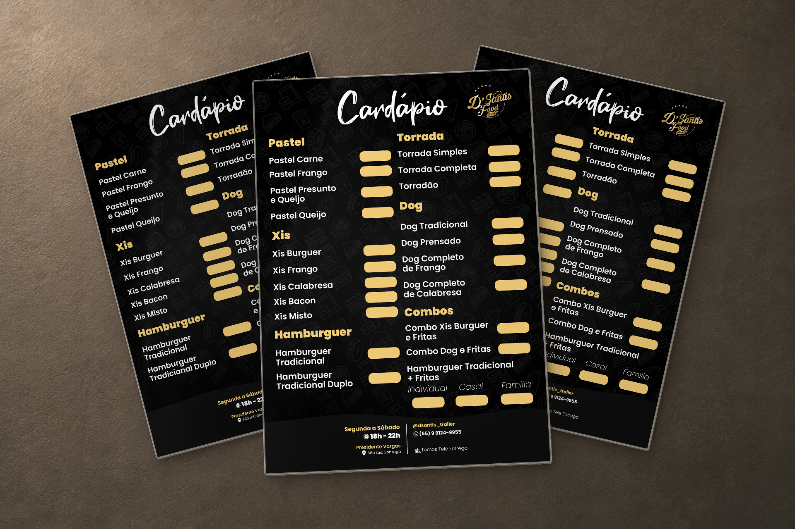
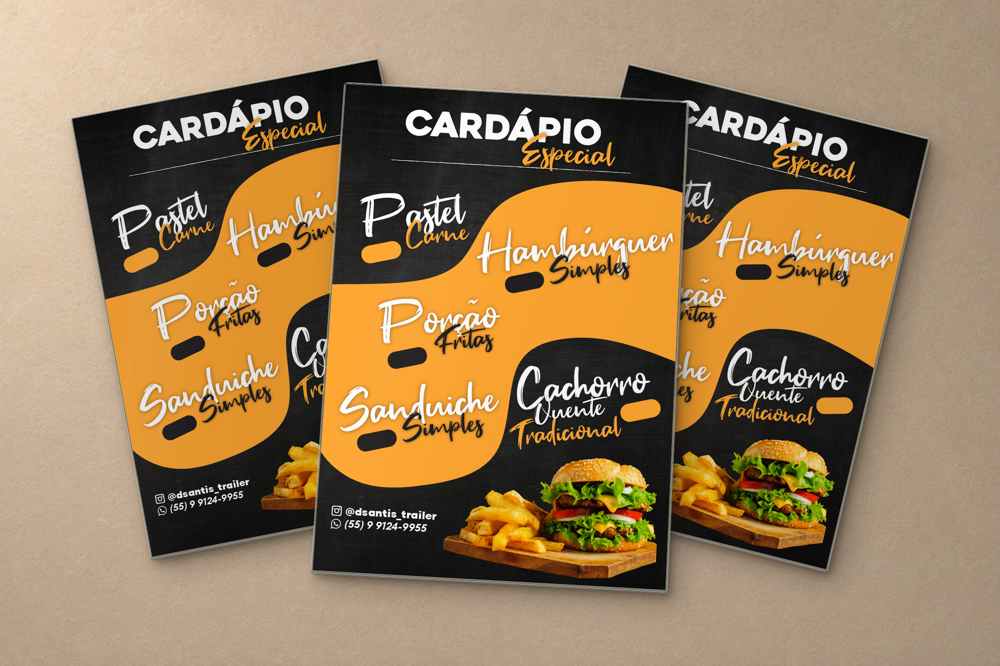
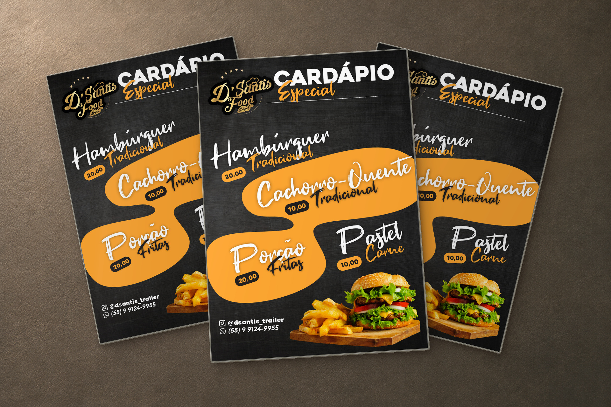
04 / REDES SOCIAIS
Posts para produtos, localização, horário, tele-entrega e avisos de operação mantêm a comunicação reconhecível no feed e nos stories.
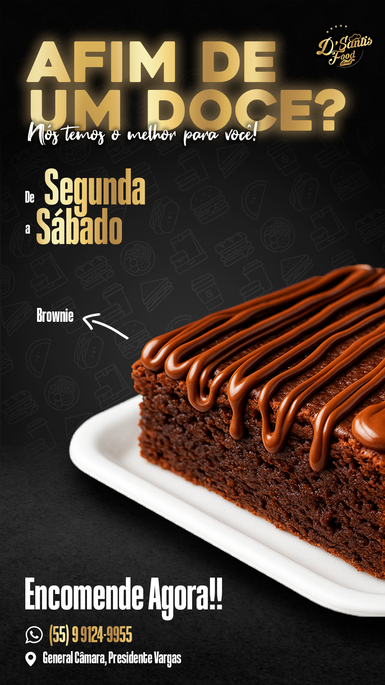
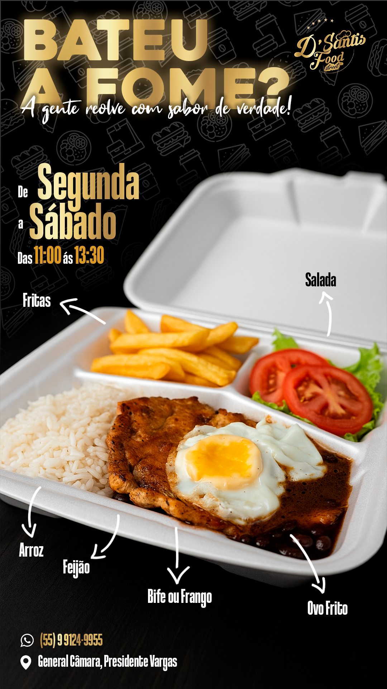
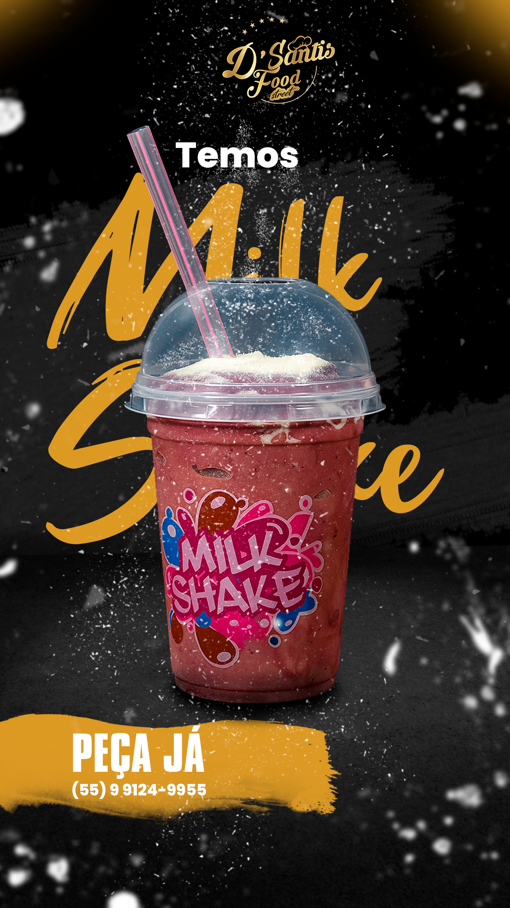


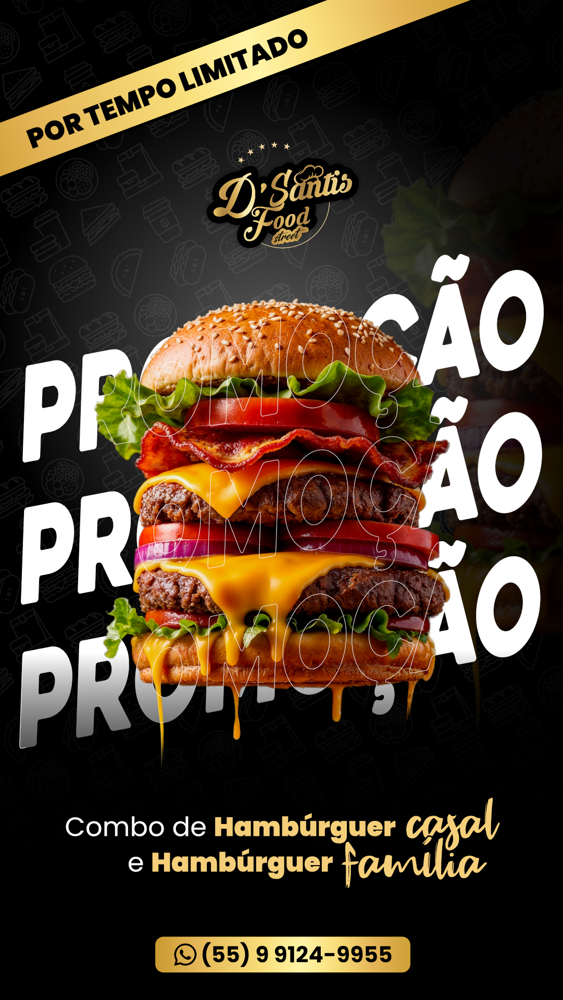
05 / CAMPANHAS
Comemorações, divulgação e artes de ocasião expandem o sistema visual da marca para novos contextos.


03 / CASOS
Logotipo, cor e elementos gráficos formam uma base que pode se adaptar a fundos, formatos e campanhas.
Embalagens, fichas, cartões e cardápios fazem a identidade aparecer no ponto de contato com o cliente.
O sistema visual é levado às redes sociais para divulgar produtos, horários, localizações e ações da marca.